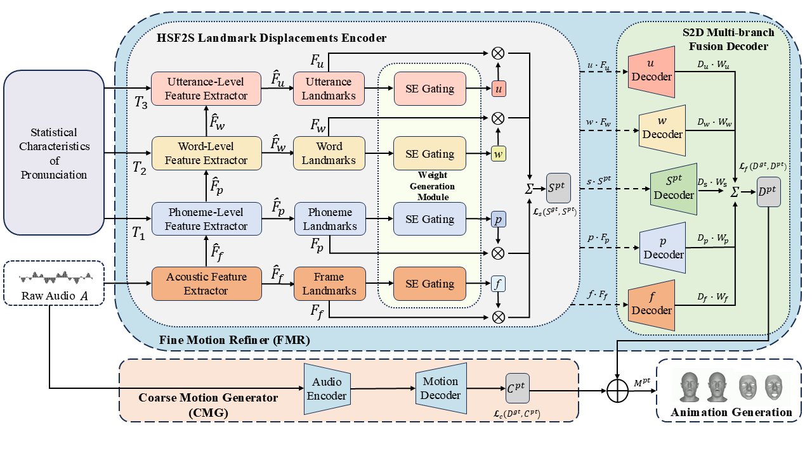

Users preferred HiSTalk over CodeTalker in lip-sync (62.2%) and realism (55.6%), and over DiffSpeaker in lip-sync (57.8%) and realism (64.4%).
Comparisons with CodeTalker, FaceFormer, and DiffSpeaker.
Speech-driven 3D talking head animation seeks to generate realistic, expressive facial motions directly from audio. Most existing methods use only single-scale (i.e., frame-level) speech features and directly regress full-face geometry, ignoring the influence of multi-level cues (phonemes, words, utterances) on facial motions, often resulting in over-smoothed, unnatural movements.
To address this, we propose HiSTalk, a hierarchical framework comprising:
HiSTalk achieves precise lip-sync and expressive facial animation, outperforming state-of-the-art methods on VOCASET and BIWI.

| Dataset | LVE ↓ | FDD ↓ | LRP ↑ |
|---|---|---|---|
| VOCASET-Test | 2.6715 | 3.3657 | 97.21% |
| BIWI-Test-A | 3.7554 | 2.7129 | 91.92% |
Users preferred HiSTalk over CodeTalker in lip-sync (62.2%) and realism (55.6%), and over DiffSpeaker in lip-sync (57.8%) and realism (64.4%).
Removing CMG or FMR increases FDD significantly on VOCASET-Test, confirming the necessity of each module.